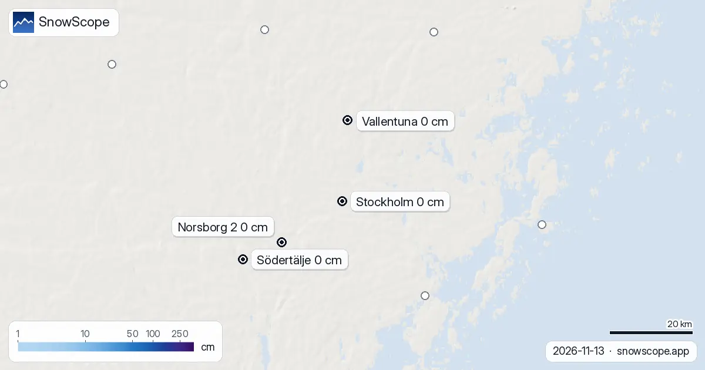

Snörapporter · Skandinavien
Dagliga snörapporter för skidåkare: var snön ligger, vad som är på väg och var du kan åka, från SnowScopes snökarta och mätstationer. Varje siffra kommer från dagens data.

Snörapport för Lofsdalen i mitten av november 2026: stationen på Häggberget på 682 m mätte 6 cm den 12 november, dalstationerna 7 till 8 cm den 13 november; runt 7 cm till väntas utan regn, öppning 11 december, 46 tidigare vintrar.

Guide till hundspann i Røros vintern 2026-27: runt 5 till 6 cm snö enligt Norges nationella snökarta, kennlar som Destination Røros listar med priser, hundspannsloppet Femundløpet i februari 2027 och reglerna för din egen hund nära tamrenar.

Snö i Romme Alpin i mitten av november 2026: Borlänge mätte 4 cm, Ludvika 10 cm och Falun 0 cm den 13 november; regn i veckan; säsongen startar 19 december på konstsnö. Vad 46 tidigare vintrar säger om natursnön här.

Snöläget i Branäs i mitten av november 2026: stationen i Kindsjön på 425 m mätte 27 cm den 13 november, Letafors 17 cm, Östmark i dalen 0 cm. Risk för regn i veckan, öppning 11 december, 46 tidigare vintrar.

Snö i Funäsdalsfjällen i mitten av november 2026: stationen i Ljusnedal mätte 7 cm den 13 november, Tänndalen har öppet på en liten yta, Ramundberget öppnar 19 december. Veckan framåt och 46 tidigare vintrar.

Guide till huskyturer och hundar i Rovaniemi vintern 2026-27: väderstationerna mätte 7 till 8 cm den 13 november, stadens första skidspår har öppnat, tre huskygårdar som Visit Rovaniemi listar med datum och priser, dagsljus och reglerna för din egen hund.

Guide till hundspann i Kiruna vintern 2026-27: väderstationen i Kiruna mätte 0 cm snö den 13 november, arrangörer som Kiruna Lappland listar med säsong och priser, korta dagar och reglerna för din egen hund i skidspår, renbetesland och Abisko nationalpark.

Den 13 november 2026 mätte väderstationerna i Stockholm och Helsingfors 0 cm snö medan Sälen hade 45 cm och Umeå 20 cm. Höjden, havet, staden och ovädrens väg förklarar det, med siffror från 46 tidigare vintrar.

Snöläget i Vemdalen i mitten av november 2026: svenska väderstationer runt Vemdalsskalet och Björnrike mätte 6 till 12 cm den 13 november efter två snöiga dagar, runt 8 cm till i veckan, öppningsplaner och 46 tidigare vintrar.

En praktisk guide till hundspann runt Tromsø vintern 2026-27: vilka huskygårdar turistorganisationen listar, när snösäsongen börjar, vad en tur kostar, polarnatten och reglerna för att gå ut med din egen hund i snön och nära renar.

Snödjup i Kläppen i mitten av november 2026: väderstationen i Sälen, 13 km bort, mätte 45 cm den 13 november efter 11 cm dagen innan; anläggningen rapporterar 25 cm. Regnrisk i veckan, öppning 11 december, 46 tidigare vintrar.

Hundägare i Göteborg, helgen 14 november 2026: 0 cm snö uppmätt runt staden på fredagen, en mild och mest torr helg. Var koppelreglerna släpper i november, de 12 hundrastgårdarna och Delsjöområdet.

Göteborg den 13 november 2026: 0 cm i Askim, Kållered, Härryda och vid alla stationer nära staden. En station 39 km nordost, Gunntorp, rapporterade 12 cm. En mild helg och regn på måndag.

Luleå den 13 november 2026: stationen vid Kallax flygplats skickade inget snödjup i dag, men stationerna runt staden mätte 3 till 7 cm, allt nytt sedan torsdagen, och mer snö faller på fredagen.

Hundägare i Stockholm, 13 november 2026: 0 cm snö uppmätt i stan, närmaste 2 cm ligger 75 km norrut. Var hunden får springa lös i Stockholm, reglerna i naturreservaten och en torr helgprognos.

Uppmätt snö runt Östersund den 13 november 2026: 19 cm på Norderön, 24 cm i Marby, 33 cm i Rissna. Tre till fyra gånger det vanliga snödjupet för datumet, med en kall och torr helg framför sig.

Umeå mätte 20 cm snö den 13 november 2026, från barmark i onsdags. Så ser det ut vid stationerna runt staden, varför det är tidigt och om snön klarar måndagens regn.

Snödjup i Kiruna den 13 november 2026: 0 cm vid stationen i stan, i Jukkasjärvi och vid Esrange. I vår snöhistorik över 46 vintrar hade stan alltid snö det här datumet. Vad helgen ger.

Uppmätt snödjup i Sverige den 13 november 2026: 133 av 322 stationer vita, ett bälte från Dalarna till Västerbotten med upp till 45 cm, ett bart söder och ett nästan bart längsta norr runt Kiruna.

Snödjup i Stockholm den 13 november 2026: 0 cm på Observatoriekullen och vid alla stationer runt staden. När snön brukar komma och varför helgen inte ger någon.

Uppmätt snö på marken den 13 november 2026 i Oslo, Bergen, Trondheim, Tromsø, Stockholm, Göteborg, Östersund, Umeå, Luleå, Kiruna, Helsingfors, Tammerfors, Uleåborg och Rovaniemi: från 20 cm i Umeå till barmark i Kiruna.